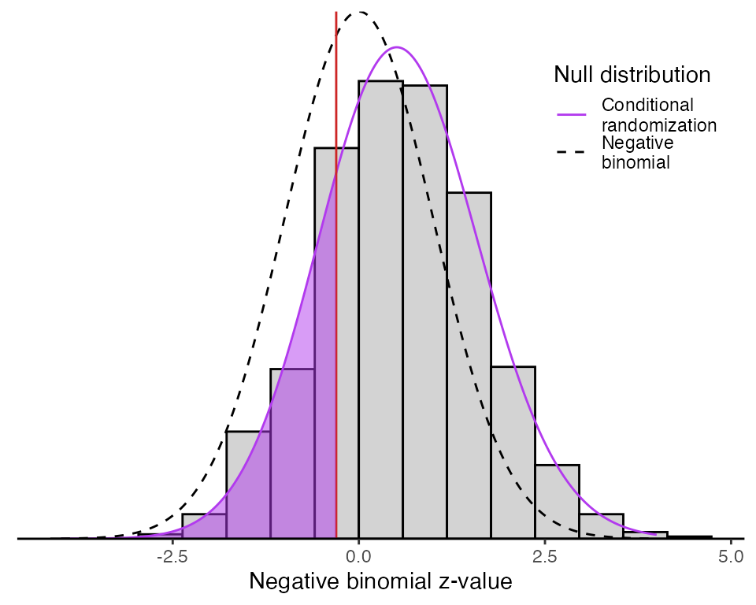

sceptre to small a small datasetsceptre-small-example.RmdThis tutorial demonstrates how to apply sceptre to a small dataset consisting of a single gene and gRNA. We use example data taken from the study A Genome-wide Framework for Mapping Gene Regulation via Cellular Genetic Screens, published by Gasperini et al. in 2019. The gene (ID: ENSG00000164713) and gRNA (ID: chr7.3255_top_two) that we investigate were selected randomly from the set of all genes and gRNAs in the study.
When analyzing a large number of genes and gRNAs, it is better to use the approach outlined in the tutorial sceptre at scale. The large-scale approach has the advantage of (i) regularizing the negative binomial regression test statistic by pooling information across genes, and (ii) recycling certain repetitive computations, thereby accelerating program execution. The small-scale approach outlined here is appropriate only for datasets consisting of a handful of genes and gRNAs.
First, ensure that you have downloaded and installed sceptre.
install.packages("devtools")
devtools::install_github("timothy-barry/sceptre")Load the package and example data.
The expressions vector contains the gene expressions (in number of UMIs); the gRNA_indicator vector records whether the gRNA was detected or not detected in a given cell; and the covariate_matrix records cell-specific technical factors (in this case, (i) fraction of UMIs that map to mitochondrial genes, (ii) sequencing batch, (iii) log-transformed total UMI count across genes, (iv) log-transformed total number of detected gRNAs, and (v) log-transformed total genes expressed). There are 205,797 cells in the data. Let’s take a peek at the data by calling head.
head(expressions)
#> [1] 0 3 2 4 0 2
head(gRNA_indicators)
#> [1] 0 0 0 0 0 0
head(covariate_matrix)
#> p_mito prep_batch lg_total_umis lg_guide_count lg_n_genes
#> 1 0.058786706 prep_batch_1 9.774062 4.204693 8.174421
#> 2 0.036086518 prep_batch_1 9.096387 3.258097 7.841100
#> 3 0.069823051 prep_batch_1 9.591308 4.110874 8.068090
#> 4 0.026186508 prep_batch_1 10.034428 3.663562 8.420462
#> 5 0.007991318 prep_batch_1 9.223849 3.610918 7.865188
#> 6 0.022356681 prep_batch_1 9.185125 4.043051 7.690286Next, we run SCEPTRE by calling the function run_sceptre_gRNA_gene_pair. This function returns a p-value corresponding to the null hypothesis that the perturbation does not impact gene expression, accounting for the technical factors.
result <- run_sceptre_gRNA_gene_pair(expressions = expressions,
gRNA_indicators = gRNA_indicators,
covariate_matrix = covariate_matrix,
B = 1000,
seed = 1234,
reduced_output = FALSE)
#> Running gRNA precomputation.
#> Running gene precomputation.
#> Running resample 100/1000.
#> Running resample 200/1000.
#> Running resample 300/1000.
#> Running resample 400/1000.
#> Running resample 500/1000.
#> Running resample 600/1000.
#> Running resample 700/1000.
#> Running resample 800/1000.
#> Running resample 900/1000.
#> Running resample 1000/1000.We can examine the resultant p-value.
result$p_value
#> [1] 0.2138241We also can examine the negative binomial z-score and the parameters of the fitted skew-t distribution used to compute the p-value.
result$z_value
#> [1] -0.3037842
result$skew_t_mle
#> xi omega alpha nu
#> -6.563831e-02 1.242149e+00 8.000418e-01 1.185023e+06Finally, we can create a histogram of the resampled, null z-scores.
p <- plot_skew_t(resampled_zvalues = result$resampled_z_values, original_zvalue = result$z_value, dp = result$skew_t_mle, interval = c(-4,4))
plot(p)
Given that the computed p-value (p = 0.21) exceeds our pre-chosen significance threshold of 0.05, we retain our null hypothesis that the perturbation does not affect gene expression. In practice, when analyzing a large dataset, we would apply a Benjamini-Hochberg correction to all gene-gRNA pairs and use a more conservative threshold to determine significance.